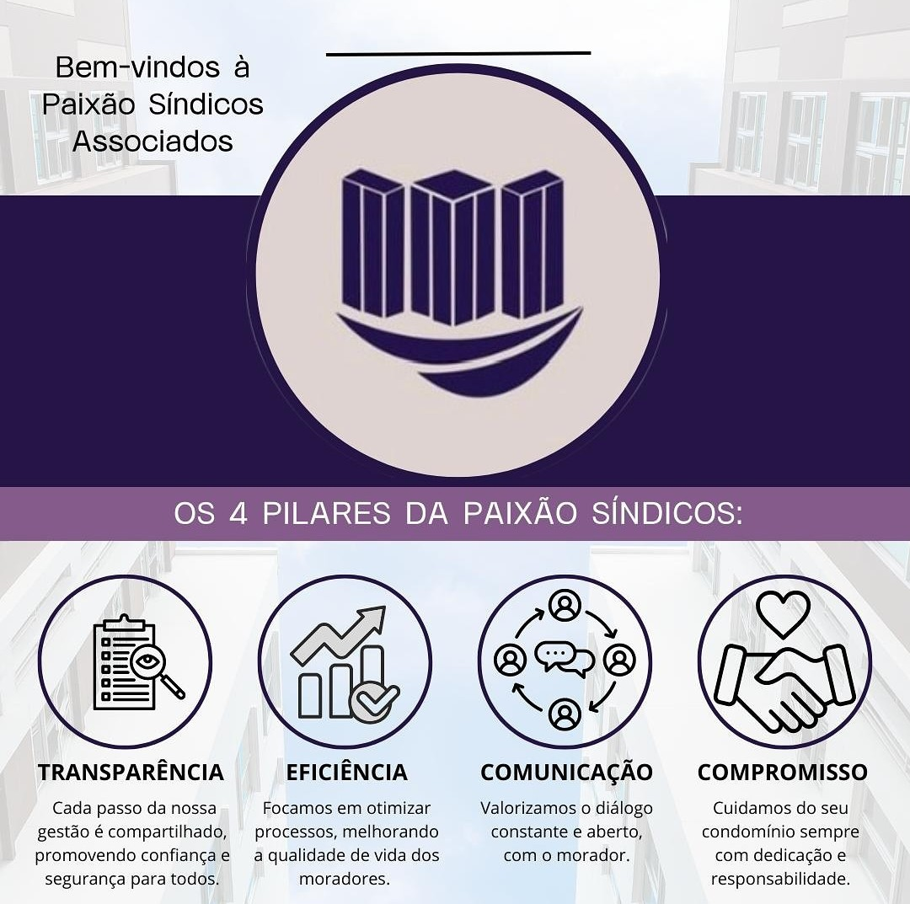

Conheça a história, os valores e a profissional por trás da Paixão Síndicos Associados.
Fundadora e sócia proprietária da Paixão Síndicos Associados, Isabel Paixão é uma profissional dedicada à gestão condominial de excelência em Salvador, Bahia. Com formação especializada e paixão genuína pelo que faz, ela construiu uma carreira sólida no setor de administração de condomínios.
Seu trabalho vai além das responsabilidades burocráticas do cargo. Isabel acredita que ser síndica profissional é, antes de tudo, cuidar do lar de outras pessoas — o que exige empatia, competência técnica e total comprometimento com o bem-estar dos moradores.
A Paixão Síndicos Associados nasceu da visão de que condomínios merecem gestão profissional, transparente e humanizada. Cada condomínio atendido recebe atenção individualizada, com soluções sob medida para suas necessidades específicas.
Os princípios que guiam cada decisão e ação da Paixão Síndicos Associados.
Oferecer gestão condominial profissional, transparente e humanizada, garantindo o bem-estar dos moradores, a valorização do patrimônio e a harmonia no convívio em cada condomínio que administramos.
Ser referência em gestão condominial em Salvador/BA, reconhecida pela excelência no serviço, ética profissional e pelo impacto positivo na qualidade de vida dos condôminos que atendemos.
Transparência, ética, comprometimento, respeito, eficiência e inovação são os pilares que sustentam todas as nossas relações — com condôminos, moradores e prestadores de serviços.
Os valores que praticamos no dia a dia da gestão condominial.
Os valores que orientam cada decisão e cada ação da nossa equipe no dia a dia.

Entre em contato com a Isabel e descubra como a Paixão Síndicos Associados pode cuidar do seu condomínio.
Iniciar conversa